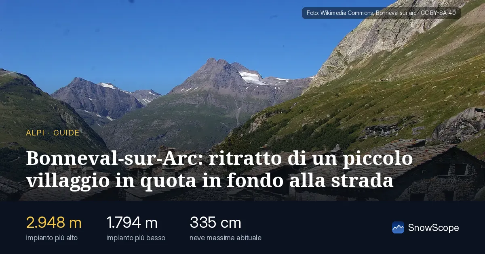
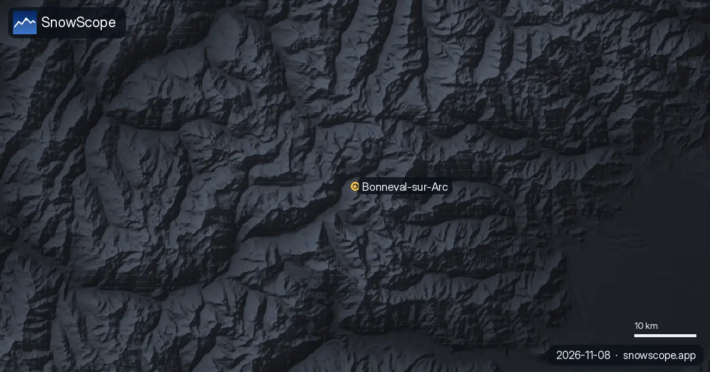

Bonneval-sur-Arc: ritratto di un piccolo villaggio in quota in fondo alla strada
Bonneval-sur-Arc è circondata dalle alte Alpi e isolata dall'inverno. Il Col dell'Iseran, il valico stradale più alto delle Alpi a 2.764 m, chiude alle auto da novembre a giugno, lasciando un piccolo villaggio di circa 285 abitanti con la sua tranquilla area sciistica. Questo isolamento è il punto forte: quota molto alta, neve costante e poche folle.
Le previsioni neve in tempo reale per Bonneval-sur-Arc nell'app SnowScopeAltezza neve, allerte powder e mappa 3D, gratis.

Un villaggio in montagna
Bonneval si trova nell'Alta Maurienne, al confine con l'Italia e in parte dentro il Parco Nazionale della Vanoise. Il villaggio è classificato tra i Più Begli Borghi di Francia, con i suoi tradizionali tetti in pietra e i vicoli stretti. Il territorio intorno sale da 1.759 m a 3.642 m, il che ti dice subito che gli inverni qui sono freddi e lunghi.
In inverno la valle dell'Arc termina a Bonneval. Vi si arriva solo dal versante Maurienne. Questo isolamento è reale: prima di partire, verifica le condizioni della strada in valle e conferma che gli impianti funzionano sul sito ufficiale.

Area piccola, quota grande
L'area sciistica è modesta di dimensioni: circa 10 impianti e 20 km di piste, che salgono da 1.794 m a 2.948 m. Non è grande secondo gli standard della Savoia, ma la quota è tutto qui. Il dislivello è 1.154 m e puoi imparare l'intera area in una mattinata. Per famiglie con bambini piccoli e principianti che cercano piste tranquille, è un vantaggio.
Gli sciatori bravi che vogliono più delle piste segnate devono andare con una guida. Lo sci fuori pista richiede il bollettino valanghe di Météo-France ogni mattina. Leggi prima di lasciare le piste.
Spessore di neve per stagione
La quota dà a Bonneval più neve di quanto la sua dimensione suggerirebbe. In basso, 1.794 m, lo spessore massimo usuale negli ultimi 46 inverni è circa 99 cm, paragonabile a quello che molti resort più grandi vedono solo a mezza montagna. È sufficiente per sciare, ma è sottile all'inizio della stagione e può scoprire le rocce.
A mezza montagna, 2.371 m, il quadro è più chiaro. Gli spessori di neve tipici sono 26 cm in novembre, 66 cm in dicembre, 103 cm in gennaio, 128 cm in febbraio e 134 cm in marzo. Il massimo usuale qui è circa 172 cm. A questa quota ci sono almeno 50 cm di neve al suolo per 15 settimane in nove inverni su dieci.
I pendii superiori rimangono profondi fino a primavera
Vicino alla vetta, 2.948 m, la stagione è molto più lunga e la neve è più profonda. Il massimo usuale è circa 335 cm, più di tre volte il valore in basso. Qui il mese più nevoso è aprile, con circa 272 cm tipici. La prima neve raggiunge questa quota intorno al 30 settembre e le ultime macchie si sciolgono intorno al 19 giugno.
Questa differenza di quota è il motivo per cui Bonneval rimane aperta a lungo in primavera. Anche a maggio, la vetta ha solitamente circa 214 cm. I pendii superiori sono dove la stagione si allunga di più.
Quando venire
Per la neve più affidabile in basso dell'area, febbraio è il mese migliore. La settimana migliore della stagione a 1.794 m ha almeno 50 cm nell'85 percento degli inverni. La neve lì raggiunge il picco in febbraio e marzo. A novembre, la base può essere sottile; prevedi circa 10 cm tipici. Aspetta almeno dicembre se vuoi buone condizioni in basso.
Più in alto, la stagione è lunga e affidabile. La prima neve raggiunge 2.371 m intorno al 7 ottobre. A metà novembre, 26 cm è tipico lì. Da dicembre in poi, 50 cm o più è usuale per 15 settimane in nove inverni su dieci.
Tendenze nel tempo
La neve qui è stata stabile. In basso, 1.794 m, il massimo mediano era circa 100 cm nei primi quindici inverni registrati e circa 101 cm negli ultimi quindici. A mezza montagna, 2.371 m, il picco è sceso leggermente da circa 176 cm a circa 169 cm, ma i giorni totali con neve al suolo sono calati più nettamente, da circa 256 a 225. L'inverno scorso, 2025-26, è stato prossimo alla norma con un picco di circa 167 cm a quella quota.
Consigli per sciatori
- Raggiungi Bonneval dalla valle Maurienne solo; la strada dell'Iseran è chiusa in inverno. Verifica le condizioni della strada in valle prima di partire.
- Per famiglie e principianti, febbraio e marzo offrono la neve più affidabile in basso e a mezza montagna.
- La neve sottile a novembre significa che le rocce possono essere visibili in basso dell'area. Aspetta dicembre se vuoi una buona copertura.
- Gli sciatori fuori pista devono andare con una guida e leggere il bollettino valanghe di Météo-France ogni mattina.
- Prima di partire, verifica il sito ufficiale per confermare quali impianti sono aperti.
Su questi numeri
Le altezze neve delle località sono la neve più alta sui pendii superiori alla data indicata; sono stime per un'area, non una misura in un punto. Le previsioni possono cambiare. Leggi sempre il bollettino valanghe ufficiale prima del fuoripista.
Bollettini valanghe ufficiali: Météo-France BERA
Cita questo articolo
Per ricerca, didattica o stampa: numeri e grafici sono liberamente riutilizzabili con licenza CC BY 4.0 citando così.
SnowScope (2026), Bonneval-sur-Arc: ritratto di un piccolo villaggio in quota in fondo alla strada, https://snowscope.app/blog/it/2026/11/bonneval-sur-arc-portrait-small-high-village-snow.html, consultato il 2026-11-09
SnowScope (Atlas Labs). (2026, November 9). Bonneval-sur-Arc: ritratto di un piccolo villaggio in quota in fondo alla strada. SnowScope snow reports. https://snowscope.app/blog/it/2026/11/bonneval-sur-arc-portrait-small-high-village-snow.html
BibTeX
@misc{snowscope2026bonnevalsurarcportraitsm,
author = {{SnowScope (Atlas Labs)}},
title = {Bonneval-sur-Arc: ritratto di un piccolo villaggio in quota in fondo alla strada},
year = {2026},
month = nov,
howpublished = {\url{https://snowscope.app/blog/it/2026/11/bonneval-sur-arc-portrait-small-high-village-snow.html}},
note = {Published 2026-11-09 11:38 UTC; accessed 2026-11-09}
}· CC BY 4.0 · Metodi, dati e strumenti →
Bonneval-sur-Arc: neve e temperatura per quota, quest'inverno vs lo scorso (strumenti) →
Segui Bonneval-sur-Arc
Gratis: un messaggio quando arriva la neve e il meteo ogni mattina.